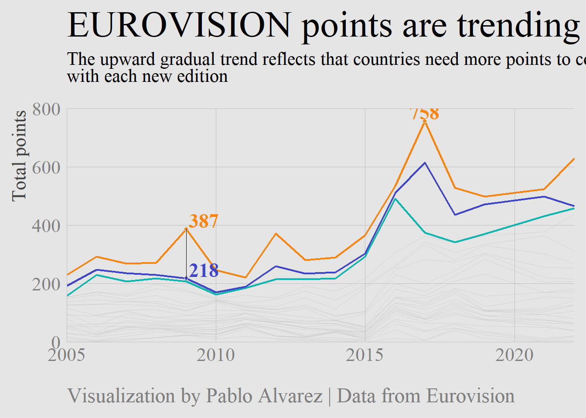

Chapter 6 R语言ggplot2折线图
这一章主要介绍R语言ggplot2画线的函数，我能想到的有
geom_line()
geom_path()
geom_vline()
geom_hline()
geom_abline()
geom_curve()
geom_segment()
geom_area() 面积图也可以看成是折线图的一种吧
geom_ribbon()
6.1 最基本的折线图
准备数据 一列x和一列y,这里根据x是离散型数据还是连续型数据分为两种情况，
当x是连续型数据的时候

作图代码
library(readxl)
library(ggplot2)
dat01<-read_excel("example_data/06-lineplot/dat01.xlsx")
ggplot(data=dat01,aes(x=var1,y=var2))+
geom_line()线可以修改参数通常有
颜色 color
粗细 size
线型 lty 线型的种类可以参考这个链接 http://www.sthda.com/english/wiki/ggplot2-line-types-how-to-change-line-types-of-a-graph-in-r-software
比如
library(readxl)
library(ggplot2)
dat01<-read_excel("example_data/06-lineplot/dat01.xlsx")
ggplot(data=dat01,aes(x=var1,y=var2))+
geom_line(color="red",size=5,lty="dashed")这里我们看到x轴的刻度不是按照1到10这样截断的，如果要修改的话需要用到scale_x_continues()函数
library(readxl)
library(ggplot2)
dat01<-read_excel("example_data/06-lineplot/dat01.xlsx")
ggplot(data=dat01,aes(x=var1,y=var2))+
geom_line(color="red",size=5,lty="dashed")+
scale_x_continuous(breaks = 1:10)如果想要把散点也加上的话可以继续叠加geom_point()函数
library(readxl)
library(ggplot2)
dat01<-read_excel("example_data/06-lineplot/dat01.xlsx")
ggplot(data=dat01,aes(x=var1,y=var2))+
geom_line()+
geom_point()折线图还有一个比较常用的操作是添加误差线，添加误差线的函数是geom_errorbar(),假设我们已经提前算好数据整理到excel里,整理的数据如下

作图代码
library(readxl)
library(ggplot2)
dat01<-read_excel("example_data/06-lineplot/dat02.xlsx")
ggplot(data=dat01,aes(x=var1,y=var2))+
geom_line()+
geom_point()+
geom_errorbar(aes(ymin=var2-sd_value,
ymax=var2+sd_value),
width=0.2)有时候可能还需要添加置信区间，添加置信区间的用geom_ribbon()函数，还是提前算好置信区间，数据集整理格式如下

library(readxl)
library(ggplot2)
dat01<-read_excel("example_data/06-lineplot/dat02_1.xlsx")
ggplot(data=dat01,aes(x=var1,y=var2))+
geom_line()+
geom_point()+
geom_ribbon(aes(x=var1,ymin=lower95,ymax=upper95),
fill="red",alpha=0.2)以上是x轴是连续型数据的情况，接下来介绍x轴是离散型数据的情况
library(readxl)
library(ggplot2)
dat01<-read_excel("example_data/06-lineplot/dat03.xlsx")
ggplot(data=dat01,aes(x=var1,y=var2))+
geom_line()+
geom_point()## geom_path: Each group consists of only one observation. Do you need to adjust the group
## aesthetic?以上代码画不出来线，离散型数据还需要我们指定一个group=1参数
library(readxl)
library(ggplot2)
dat01<-read_excel("example_data/06-lineplot/dat03.xlsx")
ggplot(data=dat01,aes(x=var1,y=var2,group=1))+
geom_line()+
geom_point()离散型数据比较常用的一个操作就是改变x轴的顺序，默认是按照首字母排序，如果想要按照我们自己要求的顺序来，我们给数据赋予因子水平
library(readxl)
library(ggplot2)
dat01<-read_excel("example_data/06-lineplot/dat03.xlsx")
dat01$var1<-factor(dat01$var1,
levels = c("B","D","C","A","E"))
ggplot(data=dat01,aes(x=var1,y=var2,group=1))+
geom_line()+
geom_point()这里需要注意的是赋予因子水平的时候levels参数后面跟的内容必须和数据里的字符完全一致，要不然会出现错误
以上的折线图在拐弯处都是很尖锐的，如果想要用平滑的线用ggplot2里的函数如何实现我暂时想不明白了，这里可以借助其他R包 ggbump 参考链接 https://github.com/davidsjoberg/ggbump 有时间可以自己研究一下，这里暂时不做介绍
6.2 分组的折线图
分组折线图需要在 x 和 y两列数据的基础上再增加一列表示分组，示例数据如下

作图代码
library(readxl)
library(ggplot2)
dat01<-read_excel("example_data/06-lineplot/dat04.xlsx")
ggplot(data=dat01,aes(x=var1,y=var2,group=group))+
geom_line()+
geom_point()用颜色 线型来区分不同的分组
library(readxl)
library(ggplot2)
dat01<-read_excel("example_data/06-lineplot/dat04.xlsx")
ggplot(data=dat01,aes(x=var1,y=var2,group=group))+
geom_line(aes(color=group,lty=group))+
geom_point(aes(color=group,shape=group))分组数据添加误差线,再给数据集增加一列误差线数据

library(readxl)
library(ggplot2)
dat01<-read_excel("example_data/06-lineplot/dat04_1.xlsx")
ggplot(data=dat01,aes(x=var1,y=var2,group=group))+
geom_line(aes(color=group,lty=group))+
geom_point(aes(color=group,shape=group))+
geom_errorbar(aes(ymin=var2-sd_value,
ymax=var2+sd_value,
color=group),
width=0.2)分组添加置信区间
library(readxl)
library(ggplot2)
dat01<-read_excel("example_data/06-lineplot/dat04_2.xlsx")
ggplot(data=dat01,aes(x=var1,y=var2,group=group))+
geom_line(aes(color=group,lty=group))+
geom_point(aes(color=group,shape=group))+
geom_ribbon(aes(x=var1,ymin=lower95,ymax=upper95,
color=group),alpha=0.2)接下来是自定义这些 颜色 形状 等
library(readxl)
library(ggplot2)
dat01<-read_excel("example_data/06-lineplot/dat04_2.xlsx")
ggplot(data=dat01,aes(x=var1,y=var2,group=group))+
geom_line(aes(color=group,lty=group))+
geom_point(aes(color=group,shape=group))+
geom_ribbon(aes(x=var1,ymin=lower95,ymax=upper95,
color=group),alpha=0.2)+
scale_color_manual(values = c("group_1"="blue","group_2"="darkgreen"))x轴是离散数据的分组折线图,基本上和连续型的数据是一样的
示例数据集如下

library(readxl)
library(ggplot2)
dat01<-read_excel("example_data/06-lineplot/dat05.xlsx")
ggplot(data=dat01,aes(x=var1,y=var2,group=group))+
geom_line(aes(color=group,lty=group))折线图x轴是时间型数据，比如如下示例
这种情况我个人建议是给数据集增加一列连续型的数据用来做x，然后再修改x轴的坐标轴标签，比如把数据集改成如下
作图代码
library(readxl)
library(ggplot2)
dat01<-read_excel("example_data/06-lineplot/dat06.xlsx",
sheet = "Sheet2")
ggplot(data=dat01,aes(x=var3,y=var2))+
geom_line()+
scale_x_continuous(breaks = 1:5,
labels = dat01$var1)
以上内容作图都是用到的geom_line()函数，接下来介绍geom_path()函数 参考 https://ggplot2.tidyverse.org/reference/geom_path.html
library(readxl)
library(ggplot2)
dat01<-read_excel("example_data/06-lineplot/dat07.xlsx")
ggplot(data=dat01,aes(x=var1,y=var2))+
geom_line()+
geom_point()ggplot(data=dat01,aes(x=var1,y=var2))+
geom_path()+
geom_point()从上图我们可以看出来geom_line()函数是按照x数值的大小从前往后连，geom_path()函数是按照数据集出现的顺序连
6.3 添加线段
添加线段用到的函数是
geom_segment() 直线
geom_curve() 曲线
比如一个简单的数据集

library(readxl)
library(ggplot2)
dat01<-read_excel("example_data/06-lineplot/dat08.xlsx")
ggplot(data=dat01,aes(x=var1,y=var2))+
geom_point(size=5)在以上两个点之间添加一个线段
library(readxl)
library(ggplot2)
dat01<-read_excel("example_data/06-lineplot/dat08.xlsx")
ggplot(data=dat01,aes(x=var1,y=var2))+
geom_point(size=5)+
geom_segment(aes(x=2,xend=4,y=2,yend=2))如果是曲线
library(readxl)
library(ggplot2)
dat01<-read_excel("example_data/06-lineplot/dat08.xlsx")
ggplot(data=dat01,aes(x=var1,y=var2))+
geom_point(size=5)+
geom_curve(aes(x=2,xend=4,y=2,yend=2))曲线可以调节弧度,用到 curvature 参数
library(readxl)
library(ggplot2)
dat01<-read_excel("example_data/06-lineplot/dat08.xlsx")
ggplot(data=dat01,aes(x=var1,y=var2))+
geom_point(size=5)+
geom_curve(aes(x=2,xend=4,y=2,yend=2),curvature = 0.2)
ggplot(data=dat01,aes(x=var1,y=var2))+
geom_point(size=5)+
geom_curve(aes(x=2,xend=4,y=2,yend=2),curvature = -1)添加箭头的话也是用到这两个函数
library(readxl)
library(ggplot2)
dat01<-read_excel("example_data/06-lineplot/dat08.xlsx")
ggplot(data=dat01,aes(x=var1,y=var2))+
geom_point(size=5)+
geom_segment(aes(x=2,xend=4,y=2,yend=2),
arrow = arrow())ggplot(data=dat01,aes(x=var1,y=var2))+
geom_point(size=5)+
geom_curve(aes(x=2,xend=4,y=2,yend=2),curvature = 0.2,
arrow = arrow())
6.4 添加辅助线
https://ggplot2.tidyverse.org/reference/geom_abline.html
垂直辅助线 geom_vline() 只需要指定xintercept
水平辅助线 geom_hline() 只需要指定yintercept
带有角度的线段 geom_abline() 需要指定截距 intercept 和斜率 slope
接下来用鸢尾花的数据集做一个演示
library(ggplot2)
head(iris)## Sepal.Length Sepal.Width Petal.Length Petal.Width Species
## 1 5.1 3.5 1.4 0.2 setosa
## 2 4.9 3.0 1.4 0.2 setosa
## 3 4.7 3.2 1.3 0.2 setosa
## 4 4.6 3.1 1.5 0.2 setosa
## 5 5.0 3.6 1.4 0.2 setosa
## 6 5.4 3.9 1.7 0.4 setosaggplot(data=iris,aes(x=Sepal.Length,y=Sepal.Width))+
geom_point()+
geom_vline(xintercept = 6,size=1,lty="solid",color="red")ggplot(data=iris,aes(x=Sepal.Length,y=Sepal.Width))+
geom_point()+
geom_hline(yintercept = 3,size=1,lty="solid",color="red")ggplot(data=iris,aes(x=Sepal.Length,
y=Sepal.Width))+
geom_point()+
geom_abline(intercept = 4,
slope =-0.2 ,
size=1,
lty="solid",color="red")
6.5 面积图
用最基本的折线图数据做一个演示
library(readxl)
library(ggplot2)
dat01<-read_excel("example_data/06-lineplot/dat01.xlsx")
ggplot(data=dat01,aes(x=var1,y=var2))+
geom_area()ggplot(data=dat01,aes(x=var1,y=var2))+
geom_area(fill="red",color="blue",alpha=0.2)6.6 实际例子
library(pacman)## Warning: package 'pacman' was built under R version 4.0.5p_load(tidyverse, showtext, ggtext)
#eurovision_raw <- readr::read_csv('https://raw.githubusercontent.com/rfordatascience/tidytuesday/master/data/2022/2022-05-17/eurovision.csv')
#readr::write_csv(eurovision_raw,file = "eurovision_raw.csv")
eurovision_raw <- readr::read_csv("example_data/06-lineplot/eurovision_raw.csv")## Rows: 2005 Columns: 18
## -- Column specification ---------------------------------------------------------------------
## Delimiter: ","
## chr (12): event, host_city, host_country, event_url, section, artist, song, artist_url, i...
## dbl (4): year, running_order, total_points, rank
## lgl (2): qualified, winner
##
## i Use `spec()` to retrieve the full column specification for this data.
## i Specify the column types or set `show_col_types = FALSE` to quiet this message.eurovision <- eurovision_raw %>%
filter(year >= 2005, section == "grand-final") # This is the first year where the 'grand-final' happens
# Analysis ----------------------------------------------------------------
highest_scores_by_rank <- eurovision %>%
filter(rank <= 3) %>%
group_by(rank) %>%
slice_max(total_points, n = 1) %>%
ungroup() %>%
select(year, artist_country, total_points)
# Margin between 1st and 2nd
eurovision %>%
select(rank, total_points, year) %>%
filter(rank <= 2) %>%
group_by(year) %>%
arrange(rank) %>%
mutate(margin = total_points - lag(total_points)) %>%
ungroup() %>%
filter(rank == 2) %>%
slice_min(margin, n = 1)## # A tibble: 1 x 4
## rank total_points year margin
## <dbl> <dbl> <dbl> <dbl>
## 1 2 218 2009 -169eurovision %>%
mutate(rank = factor(rank)) %>%
ggplot(aes(year, total_points, group = rank, color = rank)) +
geom_line(data = eurovision %>% filter(rank > 3), color = "grey75", size = .25, alpha = .5) +
geom_line(data = eurovision %>% filter(rank == 3), color = "#0FB5AE", size = .75) +
geom_line(data = eurovision %>% filter(rank == 2), color = "#4046CA", size = .75) +
geom_line(data = eurovision %>% filter(rank == 1), color = "#F68511", size = .75) +
geom_point(data = eurovision %>% filter(year == 2017, rank == 1),
shape = 21, color = "white", fill = "#F68511" , size = 1.5) +
geom_point(data = eurovision %>% filter(year == 2009, rank == 1),
shape = 21, color = "white", fill = "#F68511" , size = 1.5) +
geom_point(data = eurovision %>% filter(year == 2009, rank == 2),
shape = 21, color = "white", fill = "#4046CA" , size = 1.5) +
annotate(geom = "segment", x = 2009, xend = 2009,
y = 218 + 169, yend = 218, size = .1, color = "black") +
annotate("text", x = 2017, y = highest_scores_by_rank$total_points[1] + 30,
label = highest_scores_by_rank$total_points[1], hjust = .5,
color = "#F68511", family = "serif", fontface = "bold", size = 6) +
annotate("text", x = 2009.1, y = 218 + 169 + 30, label = 218 + 169,
hjust = 0, color = "#F68511", family = "serif", fontface = "bold", size = 6) +
annotate("text", x = 2009.1, y = 218 + 30, label = 218, hjust = 0, color = "#4046CA",
family = "serif", fontface = "bold", size = 6) +
coord_cartesian(expand = c(0, 0),
ylim = c(0, 800)) +
theme_minimal(base_family = "serif") +
labs(x = NULL,
y = "Total points",
title = "EUROVISION points are trending upwards",
subtitle = "The upward gradual trend reflects that countries need more points to come <span style='color:#F68511'>**first**</span>, <span style='color:#4046CA'>**second**</span>, and <span style='color:#0FB5AE'>**third**</span><br>with each new edition",
caption = "Visualization by Pablo Alvarez | Data from Eurovision"
) +
theme(
plot.margin = margin(rep(10, 4)),
panel.grid = element_blank(),
panel.grid.major = element_line(size = .15, color = "grey75"),
plot.background = element_rect(fill = "grey90", color = "grey90"),
panel.background = element_rect(fill = "grey90", color = "grey90"),
axis.title.y = element_text(angle = 90, hjust = .99, size = 16.5, color = "grey25"),
axis.title.x = element_text(hjust = 0, size = 20, color = "grey15"),
axis.text = element_text(size = 16, color = "grey50"),
axis.line = element_line(color = "grey75", size = .15),
plot.title = element_text(size = 32,
color = "black",
family = "serif",
hjust = 0),
plot.subtitle = element_markdown(size = 16,
color = "black",
family = "serif",
hjust = 0,
margin = margin(b = 20, t = 1),
lineheight = .35),
plot.caption = element_text(size = 18,
color = "grey50",
hjust = 0,
margin = margin(t = 20),
lineheight = .3)
)## Warning in if (!expand) {: the condition has length > 1 and only the first element will be
## used## Warning in if (!expand) {: the condition has length > 1 and only the first element will be
## used